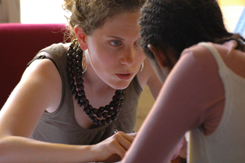

|
March 17, 7:15 PM at Melwood Screening Room |
|  |
 Claudine Bories is a French native that tickled funny bones for years as a comedian before beginning her directorial debut. Among her notable works include the 1981 Cannes favorite, Juliette du côté des hommes, and the documentary feature, La fille du magicien. She met her frequent collaborator, director Patrice Chagnard, when she became the vice president of the ADDOC association for documentary directors in 1994. They are proud to present their first collective work, Les Arrivants, at the festival's opening night. 
Patrice Chagnard was born in Grenoble, a city situated at the foot of the French Alps that is home to the famous Bastille fortress. Upon graduating with a Philosophy degree from the Sorbonne, he realized his future as a director after an early 70s tour of the Orient. No word if he found Shangri-La, but he has directed a number of films and TV documentaries that focus of the struggles of oppressed nations, including La souffrance des autres (Bangladesh). The film festival feature, Les Arrivants, is his first work with Claudine Bories. |